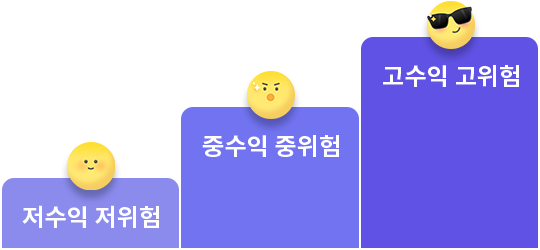

기대수익률과 투자위험

- 권장 기대수익률(%)
- 2.5
- 4.5
- 6.5
- 투자위험(%)
- 0
- 3.5
- 10.4
- 19
출처 : 농협은행 WM시스템
알아두세요
- 표시된 정보는 자산유형별로 지정된 벤치마크 지수 데이터를 분석하여 도출하였으며, 주어진 위험 수준에서 가장 높은 기대수익률을 실현해 주는 투자정보 입니다.
- 기대수익률은 예금 또는 국채 금리에 위험을 감수했을 때 얻을 수 있는 수익을 더한 정도를 말해요.
- 투자위험은 수익률의 평균과 얼마나 차이가 나는지를 측정하기 위해 표준편차를 사용합니다. 보통 높은 표준편차는 더 큰 위험을 나타냅니다.
- 투자수익은 본인이 부담한 위험의 크기 만큼 늘어나게 되기 때문에 위험 부담이 클수록 그만큼 높은 수익을 기대할 수 있어요.